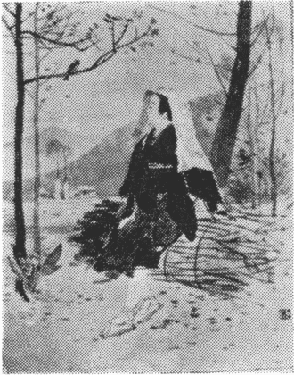

［＃ページの左右中央］
この書を後藤寅之助氏にささぐ
［＃改ページ］
［＃改ページ］
わがゆくかたは、
月明りさし
入るなべに、
さはら
木は
腕だるげに
伏し
沈み、
赤目柏はしのび
音に
葉ぞ
泣きそぼち、
石楠花は
息づく
深山、――『
寂靜』と、
『
沈默』のあぐむ
森ならじ。
わがゆくかたは、
野胡桃の
實は
笑みこぼれ、
黄金なす
柑子は
枝にたわわなる
新墾小野のあらき
畑、
草くだものの
釀酒は
小甕にかをる、――『
休息』と、
『うまし
宴會』の
塲ならじ。
わがゆくかたは、
末枯の
葦の
葉ごしに、
爛眼の
入日の
日ざしひたひたと、
水錆の
面にまたたくに
見ぞ
醉ひしれて、
姥鷺はさしぐむ
水沼、――『
歎かひ』と、
『
追懷』のすむ
郷ならじ。
わがゆくかたは、
八百合の
潮ざゐどよむ
遠つ
海や、――あゝ、
朝發き、
水脈曳の
神こそ
立てれ、
荒御魂、
勇魚とる
子が
日黒みの
廣き
肩して、いざ『
慈悲』と、
『
努力』の
帆をと
呼びたまふ。
［＃改ページ］
ああ、
大和にしあらましかば、
いま
神無月、
うは
葉散り
透く
神無備の
森の
小路を、
あかつき
露に
髮ぬれて、
徃きこそかよへ、
斑鳩へ。
平群のおほ
野、
高草の
黄金の
海とゆらゆる
日、
塵居の
窓のうは
白み、
日ざしの
淡に、
いにし
代の
珍の
御經の
黄金文字、
百濟緒琴に、
齋ひ
瓮に、
彩畫の
壁に
見ぞ
恍くる
柱がくれのたたずまひ、
常花かざす
藝の
宮、
齋殿深に、
焚きくゆる
香ぞ、さながらの
八鹽折
美酒の
甕のまよはしに、
さこそは
醉はめ。
新墾路の
切畑に、
赤ら
橘葉がくれに、ほのめく
日なか、
そことも
知らぬ
靜歌の
美し
音色に、
目移しの、ふとこそ
見まし、
黄鶲の
あり
樹の
枝に、
矮人の
樂人めきし
戯ればみを。
尾羽身がろさのともすれば、
葉の
漂ひとひるがへり、
籬に、
木の
間に、――これやまた、
野の
法子兒の
化のものか、
夕寺深に
聲ぶりの、
讀經や、――
今か、
靜こころ
そぞろありきの
在り
人の
魂にしも
泌み
入らめ。
日は
木がくれて、
諸とびら
ゆるにきしめく
夢殿の
夕庭寒に、
そそ
走りゆく
乾反葉の
白膠木、
榎、
棟、
名こそあれ、
葉廣菩提樹、
道ゆきのさざめき、
諳に
聞きほくる
石廻廊のたたずまひ、
振りさけ
見れば、
高塔や、
九輪の
錆に
入日かげ、
花に
照り
添ふ
夕ながめ、
さながら、
緇衣の
裾ながに
地に
曳きはへし、
そのかみの
學生めきし
浮歩み、――
ああ
大和にしあらましかば、
今日神無月、
日のゆふべ、
聖ごころの
暫しをも、
知らましを、
身に。
［＃改ページ］
ああ、
野は
上じらむ
曙の
ゑわらひ
浮歩む
童女さび、
瑞木の
木がくれに、
花小草、
莖葉の
下じめり
香を
高み、
朝蹈む
陰路の
行ずりに、
若ゆる
常夏の
邦あらば、
往かまし、わが
心葉がらみに、
くれなゐ、――
燃ゆる
火の
花と
咲かめ。
ああ、
世にしろがねの
高御座、
美酒の
香ぞにほふ
御座の
間に、
立ち
舞ふ
八少女の
入綾や、
樂所のをんな
樂、
箜※［＃「竹かんむり／候」、U+25C4C、14-1］の
音の
どよみよ、
大海の
浪とゆる
夜ながを、
宴會うつ
宮あらば、
ゆかまし、わが
心醉ざまに、
はえある
歌ぬしの
名をか
得め。
ああ、
日は
身隱れし
宵やみの
木立の
息ごもり、
氣をぬるみ、
林精は
水錆江に
羽ぞ
浸す
靜寂を、
月しろの
影青く、
ほのめく
氣深さや、
空室に
燈明の火ぞしめる
寺あらば、
ゆかまし、わが
心夜ごもりに、
天ゆく
羽車や
聞きつべき。
ああ、
然は
野に、
宮に、
夜ごもりに、
あくがれまどひにし
日はあれど、
果しは、
野ごころの
伸羽して、
歸るや、なつかしき
君が
手に。
たゆげの
片ゑまひ、
優まみの
うるみよ、うら
若き
靈魂の
旅路に
熱れては、
掬みつべき
うべこそ、
眞清水の
常井なれ。
［＃改ページ］
あえかなる
笑や、
濃青の
天つそら、
君が
眼ざしの
日のぬるみ、
寂しき
胸の
末枯野につと
明らめば、
ありし
世の
日ぞ
散りしきし
落葉樹は、
また
若やぎの
新青葉枝に
芽ぐみて、
歡喜の、はた
悲愁のかげひなた、
戯るる
木間のした
路に、
美し
涙の
雨滴り、けはひ
靜かにしたたりつ、
蹠やはき『
妖惑』の
風おとなへば、
ここかしこ、『
追懷』の
花淡じろく、
ほのめきゆらぎ、『
囁き』の
色は
唐棣に、
『
接吻』のうまし
香は
霧の
如、
くゆり
靡きて、
夢幻の
春あたたかに、
醉ごこち、あくがれまどふ
束の
間を、
あなうら
悲し、
優まみの
日ざしは
頓に、
日曇り、『
現し
心』の
風あれて、
花はしをれぬ、
蘗えし
青葉は
落ちぬ、
立枯の
木しげき
路よ、ありし
世の
事榮の
日は、はららかにそそ
走りゆき、
鷺脚の『
嘆き』ぞ、ひとり
青びれし
溜息低にまよふのみ。――
夢なりけらし、
ああ
人妻、――
實にあえかなる
優目見のもの
果なさは、
日直りの
和ぎむと
見れば、やがてまた、
掻きくらしゆく
冬の
日の
空合なりき。
［＃改ページ］
新甞の祭り日なりき、
午さがり、曝れし河原に、
老御達、『冬』こそたてれ、
身ぞたゆげに。
數へ日のこころ細さや、
涙眼なる日のたたずまひ、
物の影、淡げに搖れて、
うるみ色に。
雲の襞ほのかに鈍み、
空ひくに滑るゆるかさ、
ありし世のおもひでぐさの
榮、また、空華。
みだれ伏す根じろ高萱、
老しらむ末葉のそそけ、
氣を寒み、失聲かすけく
音こそいため。
今し、日は思ひ消ゆらし、
面隱し、――うは曇りして、
夕時雨しのびに泣くや、
欷歔よよと。
かかる日よ、在巣の鳥も、
うらびれし目路の眺めに、
さへづりの徒音を絶えて、
俯居すらめ。
束の間や、――やがて日直り、
冬の日はほほ笑みそめつ。
青じろき頬ぞ、鼻じろむ
面ほでり。
樹に、莖に、伏葉に、石に、
泣き濡れしうるほひ映えて
嘆かひの似るものもなき
うつくしさや。
日の心地、いまの憂身に、
そのかみの美き日をしのぶ
さびしさに、笑みし子ならで、
誰か解かめ。
［＃改ページ］
片びなた、
醜家のかくれ、

だかの
老木にそひて、
頂がけり、
蔓の
手たゆき
零餘子かづら。
八少女の
野の
使ひ
女に、
身ぞひとり、ささやけ
者や、
葉がくれに、ああ
聊かの
實こそむすべ。
熟色の
黄金覆盆子は、
そら
聖、あかづら
鶫、
ひと
日來て、
啄ばみ
去りぬ、
醉のすさび。
核ぐみし
茱萸は、
端山の
まめをとこ、
栗鼠か
拾ひて、
小甕酒釀みもこそすれ、
洞窟ふかに。
似ず、ひとり
莖葉のしたに、
（
隱り
戀、
人こそ
知らね、）
實はむすび、
實はまた
熟えて、
蔓もたわに。
つむじ
風、した
葉の
煽り、
あたふたと
零餘子はこぼる。
ああ
不祥、――
高珠數の
珠のみだれ。
實は、さあれ
底土にひそみ、
日にめざめ、
濕りに
吹
び、
いつかまた
芽生を
伸して、
二代ゆかめ。
身ぞ
小野の
矮人ながら、
あけぼのの
映、またありし
夕ながめ、
見こそ
醉ひしか、
數多がへり。
身の
程のいささけ
業に、
許されの
性は
足ひぬ。
ああ
熟實、――わが
世は
落ちて
またかへらじ。
秋収め、
野田のせはしさ、
敝履のはためきや、――いま、
せつなさの


ゆるに、
葉こそ
喘げ。
［＃改ページ］
うべこそ
來しか、
小林の
法子兒鶲、――
そのかみ、（
邦は
風流男の
代にかもあらめ。）
豐明節會の
忌ごろも、
童男のひとり、
日蔭かづらや
曳きかへる
木のした
路に、
葉染の
姫に
見ぞ
婚ひて、
生れにし
汝、
黄櫨のうは
葉はくれなゐに、
また、
榛樹の
虚の
實は、
根に
落ち
鳴りて、
常少女なる
母宮の
代としもなれば、
すずろありきや
許されて、
さこそは
獨り
野木の
枝に、
占問ひ
顏にたたずみて、
初祖の
人や
待ちつらめ。
ひととせなりき、
春日の
宮の
使ひ
姫、
秋ふた
毛して、
竹柏の
木の
間をゆきかへる
小春日和を、
都ほとりの
秋篠や、
＊『
香の
清水』は
水錆びてし
古き
御寺の
頽廢堂の
奧ぶかに、
技藝天女の
御像の
天つ
大御身、
玉としにほふおもざしに、
美し
御國の
常世邊ぞ
あくがれ
入りし
歸るさを、
ふとこそ、
荒れし
夕庭の
朽木の
枝に、
汝が
靜歌を
聞きすまし、
心あがりのわが
絃に、
然は
緒合せにゆらぐ
音の
歌ぬしこそは、
うべ
睦魂の
友としも、
おもひそめしか。
また、ひと
歳は
神無月、
日ぞ
忍び
音に
時雨れつる
深草小野の
柿の
上枝に
熟みのこる
美し
木醂、
入日に
濡れて
面はゆに
紅らむゆふべ、
すずろ
歩きの
行くすがら、
竹の
葉山の
雨滴りはらめく
路に、
汝を、ひとり
黄鶲の
默の
俯居をかいまみて、
＊ありし
掛想のまれ
人の
化か、
雨じめる
野にくゆる
物のかをりに、
そのかみの
夜や
思ひいでて、
涙眼に
鳥は
嘆くやと、
目ぞ
留りにし。
ああ
汝こそ、
小林の
法子兒鶲、――
人の
世の
往くさ
來るさに、
ともすれば、まためぐり
會ふ
魂あへる
子や、――
實にいささめの
縁ながら、
空華にはあらじ。
わが
魂の
小野にして、
『
努力』の
濕ひ、『
思慧』の
影おほし
齋きて、
さて
咲きぬべき
珍の
花、
そのうら
若き
莟みこそ、
さは
龕の
戸と
噤みつれ、
まだき
滴る
言の
葉の
美しにほひは、
生命の
火をも
齋はふまで、
香にほのめきぬ。
＊秋篠寺に香水堂あり常曉阿闍梨閼伽井の舊蹟なり
＊竹の葉山の下路は深草少將が通ひ路の舊蹟と傳へらる
［＃改ページ］
わが
故郷は、
日の
光蝉の
小河にうはぬるみ、
在木の
枝に
色鳥の
咏め
聲する
日ながさを、
物詣する
都女の
歩みものうき
彼岸會や、
桂をとめは
河しもに
梁誇りする
鮎汲みて、
小網の
雫に
清酒の
香をか
嗅ぐらむ
春日なか、
櫂の
音ゆるに
漕ぎかへる
山櫻會の
若人が、
瑞木のかげの
戀語り、
壬生狂言の
歌舞伎子が
技の
手振の
戯ばみに、
笑み
廣ごりて
興じ
合ふ
かなたへ、
君といざかへらまし。
わが
故郷は、
楠樹の
若葉仄かに
香ににほひ、
葉びろ
柏は
手だゆげに、
風に
搖ゆる
初夏を、
葉洩りの
日かげ
散斑なる
糺の
杜の
下路に、
葵かづらの
冠して、
近衛使の
神まつり、
塗の
轅の
牛車、ゆるかにすべる
御生の
日、
また
水無月の
祇園會や、
日ぞ
照り
白む
山鉾の
車きしめく
廣小路、
祭物見の
人ごみに、
比枝の
法師も、
花賣も、
打ち
交りつゝ
頽れゆく
かなたへ、
君といざかへらまし。
わが
故郷は、
赤楊の
黄葉ひるがへる
田中路、
稻搗をとめが
靜歌に
黄なる
牛はかへりゆき、
日は
今終の
目移しを
九輪の
塔に
見はるけて、
靜かに
瞑る
夕まぐれ、
稍散り
透きし
落葉樹は、
さながら
老いし
葬式女の、
懶げに
被衣引延へて、
物嘆かしきたたずまひ、
樹間に
仄めく
夕月の
夢見ごこちの
流盻や、
鐘の
響の
青びれに、
札所めぐりの
旅人は、すゞろ
家族や
忍ぶらむ
かなたへ、
君といざかへらまし。
わが
故郷は、
朝凍の
眞葛が
原に
楓の
葉、
そそ
走りゆく
霜月や、
專修念佛の
行者らが
都入りする
御講凪ぎ、
日は
午さがり、
夕越の
路にまよひし
旅心地、
物わびしらの
涙眼して、
下京あたり
時雨する、うら
寂しげの
日短かを、
道の
者なる
若人は、ものの
香朽ちし
經藏に、
塵居の
御影、
古渡りの
御經の
文字や
愛しれて、
夕くれなゐの
明らみに、
黄金の
岸も
慕ふらむ
かなたへ、
君といざかへらまし。
［＃改ページ］
そのかみ、
山の
一の
日に、
草木はなべて、
ああ
金星草、
色ゆるされの
事榮に
笑みさかゆるを、
ああひとつば、
ひとり
空手に、
山姫の
宣をこそ
待て、
ああひとつば。
春は
馬醉木に、
蝦夷菫かざしぬ、
花を。
ああひとつば、
裝ひ
似ざるうれたさに、
宮にまゐりて、
ああひとつば、
願へど、
姫は
事なしび、
素知らぬけはひ、
ああひとつば。
夏は
山百合、
難波薔薇香にほのめきぬ、
ああひとつば、
匂ひ
香なきにうらびれて、
一日は
洞に、
ああひとつば、
嘆けど、
姫は
空耳に
片笑みてのみ、
ああひとつば。
秋は
茴香、えび
蔓實ぞ
色づきつ、
ああひとつば、
素腹の
性を
恨みわび、
夜を
泣き
濡れて、
ああひとつば、
萎ゆれど、
姫は
目も
空に
往き
過ぎましぬ、
ああひとつば。
やがて
葉は
散り、
實は
朽ちぬ。
冬木の
山に、
ああひとつば、
獨りし
居れば、
姫は
來て『
思ひかあたる、
ああひとつば、
世は
吾とわが
知るにこそ、
在りがひはあれ。』
ああひとつば。
姫は
微笑み、『
今日もはた、
香をか
※［＃「義」の「我」に代えて「咨−口」、U+7FA1、53-5］む、
ああひとつば、
色をか、いかに、
齋ひ
子の
斯くや、
御賜。』と
ああひとつば、
その
日よりこそ、
黄金斑の
紋葉とはなれ、
ああひとつば。
［＃改ページ］
日は暮れぬ、野の面低に、
霧はくゆるたゆげさの、
齋精進、懺悔のひと夜、
思ひしづむ魂ならし。
夕晴の黄金路に、
かへる鳥の遠がくれ、
胸の汚染、ひとつ消えて、
今はた、二のうするかに。
葉ずくなの並木なかに、
『靜こころ』の浮歩み、
木木の枝しぬに垂れて、
われかの樣に息づきぬ。
いま雲の夕くれなゐ、
天照る日の大殿に、
をんな樂、かへり聲の
ほのにひびく夢ごこち。
淨まはる魂の深み、
聖ごころととのひて、
美し音のさこそ響む
日のあなたに往かまほし。
［＃改ページ］
み冬となりぬ、日暮れぬ、
ひねもす森にあらびし
脚早の野分は、うしろ寒に、
そそけの髮もみだれて、
北山あたりいそぎぬ。
もとあら木立の落葉林、
木の息ごもりたゆげに、
殘りの葉こそは風にあへげ。
澄みつる空や、さながら
ありにし戀も忘れて、
菩提樹がくれの法の苑に、
『無漏慧』にあそぶ聖の、
とわたる鳥のありなし、
いささの染をもえは許さぬ
齋戒か、――嚴の清まりは、
見るだに堪へせじ、現しごころ。
あな大日枝の額に、
玉冠する夕日の
光や、天なる美し眼ざし、――
東へ、ゆるに峰越の
淡雲すべる靜けさ、
これやは終なる魂のひと日、
すずろに心ゆらぎて、
ありしを忍ぶる美き名ならし。
束の間なりき、夕ばえ
今はた仄にうすれぬ。
さて日は葬式の鈍に暮れて、
眞闇の墓に入るらめ。
この靜かなる臨終に、
吾や看護婦の心しりに、
日の物深さしのびて、
祕密のこころも辿らまほし。
［＃改ページ］
妖こそ
見しか、
立枯の
木繁き
木原［＃ルビの「こはら」は底本では「こ ら」］、
色鳥はさしぐむ
路の
奧ぶかに、
ひともと
青木、
木叢なる
廣葉のかくれ、
黄金なす
鈴生の
實をなつかしみ、
熟みつはりたるひと
房を
摘みにし
日なり、
矮人の
黒染すがたつと
見えて、
『あな
許されぬ
慧の
實を、』と
私語低に、
面隱し、
目ぶかに
被衣うちまとひ、
 杖
杖の
音ほとほとと、
木のした
路を、
見え
隱れ、
鷺脚にこそ
辿りしか。
妖こそ
見しか、
姫百合は
木暗に
俯居、
石楠花は
日向に
夢む
花苑に、
あえかの
人と
相曳の
日のしづけさを、
囁きは
細蜂の
羽とひるがへり、
うまし
言葉は
清酒の
露としたみて、
醉心地、
愛でのまどひを、――あな
詫し、
生目とまりし
苧垂の
裾うちはへて、
木がくれに
奧寄る
人の
後姿に、
頂がくる
手は
解けたるみ、ふくろ
心の
氣をさむみ、
身は
物怖に
竦まりき。
妖こそ
見しか、
午さがり
日ぞ
照りあかり、
美し
香はほのかに
薫ゆる
新舘、
一の
樂所にかきならす
眞玉唐琴、
立樂の
色音は
浪のたかまりに、
心あがりの
面ほでり、とりゆの
半ば、
風流男や、
紅顏孃子の
間の
座に、
異よそほひの
長すがた、
童男のひとり、
弱肩の
藤衣のやつれに
見惱ひて、
押手は
梁のくづれ
鮎さみだれ
落ちて、
緒合せの
調べの
糸ぞなか
絶えし。
妖こそ
見しか、
御燈の
火はねむたげに、
華籠の
花吐息かすけき
古寺に、
夕座まゐりの
在り
人は
罷りし
夜はを、
身ぞひとり
齋居精進の
籠り
居に、
思ひ
恍けてし
常世邊の、
美し
黄金の
嚴の
苑、――
天つ
少女の
相舞に、
見しは、
頭白のねび
御達、あな
時のまに、
なよびかの
姫は
隱れて、
唯ひとり
墳墓の
如立ち
殘るものわびしさに、
胸騷ぎ、つとまぼろしは
覺めはてき。
妖こそ
見しか、
水無月の
祭のひと
日、
往き
軋む
飾車の
山鉾に、
日ぞ
照りしらむ
日盛［＃ルビの「ひざか」は底本では「ひざかり」］りの
都大路を、
人なだれ、
祭物見の
大衆に、
また
見ぬ、
鈍の
衣かづき、
他こそ
知らね、
不毛地の
野にも
往くかのうらびれに、
打附ごころ、
小走りに
追ふとはすれど、
物の
怪は
絶えずかなたに
前ゆきて、
えこそ
及ばね、
足惱みぬ、ああ
息詰むと、
道のべに、
身ぞしだらなに
倒れにし。
こよひ
熱るる
病臥の
惱みのもなか、
世はとみに
鴉羽いろの
焔して、
蕩けたゆたふ
火の
海に、
吾や
落葉の、
左視右顧、ゆくへも
知らぬ
途すがら、
ふと
遠方に
目馴てし
人がたち
見て、
直みちに
追ひすがりつゝ
失聲して、
『
君よ』と
呼べば、
立ちどまり、
振向き
樣に、
『
見惱ひの
時こそ
來れ。』と
脱ぎすべす
被衣のひまに
見入るれば、あな『
我』なりき、
驚駭に
胸はふたぎぬ、
危篤れぬ。
［＃改ページ］
季は
夏なか、
日ぞ
眞晝、
日ざしは
麥の
穗にしらみ、
野なかの
路に
またたきて、
濁酒の
如、
湧きたちぬ。
牧の
小野には、
並木立、
腕だるげに
葉を
垂れつ。
青ぶくれなる
水錆沼は、
めまぐるしさに、
息だえぬ。
雲のひとひら、
たよたよと
ひゆきて、
ありなしに、
やがては
消えつ。
濃青なる
空や、
虚なる
墓ならし。
水の
面の
水澁
氣をぬるみ、
蠑
は

に
くぐり
入り、
爐土の
香に
息むせて、
蛇はひそみぬ、
葉がくれに。
なべての
上に
高照す
嚴の
嘖や、
あな
寂し、
悔なき
魂の
けだかさは、
げに
水無月の
日ならまし。
［＃改ページ］
生命の
路のもろ
側に
聳やぎ
立てる
『かなしび』の
女木、『よろこび』の
男木、
今宵さしぐむ
月代のまみの
濕みに、
すずろに
木靈うらびれて、
天の
幸夜にあくがるる
沈默の
深みを、
笛の
嘆きの
音をいたみ、
上枝そよろに
囁やきて
散りこそまがへ、
二木の
落葉ほろほろに。
『日影［＃ルビの「ひかげ」は底本では「ひがげ」］にしめらへる
『かなしび』の
一片は黄朽葉の
色に染み。』
『日向にひるがへる
『よろこび』の
一片は緑葉の
香ににほふ。』
『ああ、わが故郷は
聖り世の
沈默ぞ、齋居する
嚴の苑。』
『また、わが本宮は、
箜篌の音の
緒合せ、うちどよむ
美し國。』
『そこしも、黄金なす
『慧』の實、はた
木ぐらき無憂華樹の
葉のにほひ。』
『かしこよ、狹丹づらふ
『愛』の花、
『努力』の常烽火、
日の光り。』
『そこしも、齋き女の
小忌ごろも、
蝋の火、黄金文字、
偈のけはひ。』
『かしこよ、八少女の
をんな樂、
盃誓、さざめ言、
白酒の香。』
『かなたへ、――忌精進、
夜ごもりに、
今はた歸るべき
羽。』といへば、
また言ふ、『かかる夜を、
宴會うつ
かなたへ、――いざ、朱の
赭舟を。』
『苑には、領す神
名こそあれ、
畏こし、あな天の
『あくがれ』女。』
『宜こそ、いまそがる
國つ神、
尊とし、名は天の
『あくがれ』男。』
色音は
絶えつ、――
醉ひざまの
心あがりに、
さざめき
散りし
飜れ
葉は、
糸絡みせし
舞の
羽の、つと
舞ひさして、
噤みぬ、
下に
落ち
敷きぬ。
生命の
路に、
雌鳥羽に、はた
雄鳥羽に、
唇觸れあひて
相寢ぬる
伏葉の
亂れ、
魂合へる
美し
睦びに、
月は
夜すがら
見ぞ
惚けぬ。
＊秋の末つ方月の一夜洛東華頂山
境内に笛の音をききて咏める
［＃改ページ］
夏なかの榮えは過ぎぬ、
くたら野の隱れの古沼、
『靜寂』は翼を伸して
はぐくみぬ、水のおもてを。
鳰や、實に淨めの童女［＃ルビの「をとめ」は底本では「をさめ」］、
尼うへの一座なるらし。
なづさひの羽きよらかに、
水泥なす水澁に浮きつ。
水漬く葉の眞菰のみだれ、
伏葦の臂のひかがみ、
末枯や、――さてしも齋塲、
おもむろに鳰は滑りぬ。
漁人の沓のおとにも、
鼻じろみ、面隱す兒の
振りかへり、かつ涙ぐみ、
水がくれにつとこそ沈め。
河骨の夏を夢みて、
ほくそ笑む水底の宮、
潜ぎ姫、『歸依』の掬むなる
常若の生命湛ひぬ。
見ず、暫時、――今はた浮きつ、
淨まはる聖ごころの
かひがひし、あな鳰の鳥、
日ねもすに齋きゆくなり。
［＃改ページ］
黄金覆盆子は葉がくれに、
眼うるみて泣きぬれぬ。
青水無月の朝野にも、
嘆きはありや、わが如く。
幸も、希望も、やすらひも、
海のあなたに徃き消えつ。
この世はあまりか廣くて、
をとめ心はありわびぬ。
朝踐む風のささやきに、
覆盆子のまみは耀きぬ。
神はをとめを路しばの
片葉とだにも見給はじ。
［＃改ページ］
夏野の媛の手にとらす
しろがね籠、ももくさの
香には染むとも、追懷は
人のまみには似ざらまし。
伏目にたたすあえかさに、
ひと日は、白き難波薔薇、
夕日がくれに息づきし
津の國の野を思ひいで。
ひと日は、うるむ月の夜に、
水漬く磯根の葦の葉を、
卯波たゆたにくちづけし
深日の浦をおもひいでぬ。
［＃改ページ］
別れは、小野の白楊、
夕日がくれに落つる葉の
長息よ、繁にうらびれて、
さあれ、靜かに離れゆきぬ。
かたみの路の足惱みに、
思ひしをれて弛む日は、
美くしかりしそのかみの
事榮にしもなぐさまめ。
愛でのさかりに、何知らず、
この日も、やがてありし世の
往きてかへらぬ追懷と、
消ゆらめとこそ思ひしか。
［＃改ページ］
この夕ぐれの靜けさに、
魂はしのびに息づきて、
何とはなしに、おもひでに、
二つの花の香を嚊ぎぬ。
ひとつは、濕める梔子の、
別れのゆふべ泣き濡れし
あえかの胸に、今［＃ルビの「いま」は底本では「いも」］もはた、
『日』は殘らめとささやきつ。
ひとつは、薫ゆる野茨の、
今は末枯れぬ、そこにして、
また新しき『日』は芽ぐみ、
花もぞ咲くとつぶやきつ。
［＃改ページ］
時はふたりをさきしかば、
また償ひにかへりきて、
かなしき創に、おもひでの
うまし涙を湧かしめぬ。
［＃改ページ］
今日しも、卯月宵やみに、
十六夜薔薇香ににほふ。
なつかしきもの、胸の戸に、
黄金の文字の名ぞひとり。
神はをとめを召しまして、
いづくは知らず往にしかど、
大御心のふかければ、
殘る名のみは消しませね。
［＃改ページ］
夕月さしぬ、野は凍みぬ、
日のいとなみに倦みはてて、
苅りし小草に倒れ伏し、
別れし人の身ぞおもふ。
さても、眞晝を玉敷の
御苑にたたす君なれば、
夜半にはかかるくたら野に、
すずろ歩きもし給ひぬ。
［＃改ページ］
今朝あけぼのの浦にして、
われこそ見つれ、面ほでり、
濃青の瞳子、ひたひたの
み空と海の接吻を。
君や青空、われや海、
ああ醉心地、擁しめに
胸ぞわななく、さこそ、かの
か廣き海も顫ひしか。
［＃改ページ］
人待つ宵を、日のかたみ、
大葉黄菫花さきぬ、
愛での盛りに、言ひ知らず、
物さびしさの身にぞ泌む。
花とをみなの持てなやむ
悲びな來そ、天つ日の
ながながし齡に唯ひと日、
今日に醉ふなる身のふたり。
［＃改ページ］
葉こそこぼるれ、夏なかの
青水無月のかげに見し
その日の夢はまづ覺めて、
今日はた汝、――ああ無花果。
昨日ぞ、夕に、あかつきに
露けかりつる身のふたり、
明日を、天なる大御手に
委ぬるも、はた、――ああ無花果。
［＃改ページ］
霜月ひと
日、
朝戸出に、
小野の
木守は、
高膚の
阿利襪樹の
根に
散りぼひし
實のあり
數に
驚きて、つと
立ちかへり、
目無し
籠を
後ろ
手にふた
行くごとく、
ただ
目に
人を
見し
時は、なよび
姿の
耀ひわたる
清らさに、
戀は
退りて、
ふくろ
心の
奧ぶかに
隱るとせしが、
落ちゐて、やがて
花やかに
穗に
現はれぬ。
［＃改ページ］
別れぬ、
二人。
魂合ひし
身は、
常世にも
離れじとこそ
悶えしか、そも
仇なりき。
落葉もかくぞ
相舞に
散りはゆけども、
分ちぬ、
風は
追わけに。さて
見ず
知らず。
［＃改ページ］
幻なりき、
事映の
消えゆくにこそ、
御賜のふゆの、かつがつに
目耀ひ
初むれ。
ああ
神無月、
木叢なる
葉ぞ
散り
透きて、
濃青の
空の
微笑ひ、
然はほのめきつ。
［＃改ページ］
夕づく日、黄金羽ぐるま、
海の宮、今かも沈め、
天つ軋み。
野づかさの草の淺みに、
まどろみの夢路は覺めぬ、
目こそひらけ。
夕霧は、身樣たゆげに、
目馴樹の木叢にまきて、
うしろ袈裟に。
青羽木菟、叉枝低に、
片眠り、言葉ずくなの
宿居すがた。
靜けさの野によみがへる
青をみな、身や幸魂の
月見小草。
見よ、かなた、森の木の間に、
うは白み、――ああ月白の
にほひ仄に。
いま、樹々の片枝の青み、
やがて、野のしろがね色や、
被衣兄姫。
ぢきたりす花の瞳子は、
日にあきて、日にしも笑みぬ、
紅顏童女。
似ず、わなみ若尼御前の、
夜籠りに、ささらえをとめ
見こそ惱へ。
身ぞ、姫が丈の垂り髮
花鬘、しづくや凝りし
こゝろまどひ。
姫か、また魂のおほ宮、
常世邊や、――無上涅槃の
嚴のむしろ。
焚きしむる花の蕚は、
夜の、やがて吾が世黄金の
齋ひ火盤。
くゆり香は、莖葉に蒸して、
聖り世の初夜の精進、
齋塲淨め。
靜こころ、下にゆらぎて、
魂むすび、――思ひぞあがる
醉ひの今や。
野の老狐踏みは折るとも、
えやは朽ちめ［＃ルビの「く」は底本では「ち」］、身よ弱草の
聖ごころ。
［＃改ページ］
咲きいでて
今日しも
七日、
野茨の
にしまじる
うまれ
拙な。
つまどひの
京をんな
鷸、
黄脚踏む
下にも
折れて、
莖葉かがむ。
神無月、
入日の
淡さ、
しくしくと
光はにじむ、
臂の
痛み。
彼處、いま
花はひからび、
香は
朽ちて、
老がれ
鳴るや、
河原よもぎ。
ここに、また
根は
覆へり、
亂り
尾の
苦參こそ
寢れ、
腕だるに。
草絡み、
落葉の
反に、
熟白英、――ぬる
火の
雫、――
實こそつゆれ。
今はとて、
占野の
歌女
蟋蟀は、
絃をゆるめて
入るや、
培土。
寂しさは
墓のふかみに、
あな
聞きぬ、『
宿世』の
脚の
忍びありき。
歸依の
根を
延けばや
下に、
戰慄の
今はも、
阿摩へ
かへる
心地。
［＃改ページ］
夢ざめつ、――今はた聞きね、
眞白げの眠りの退羽、
羽ぶきゆくを。
夢か、――さは、わが世の刈野、
片日向、小春日和の
日かげぬるに。
過ぎ去りし日の事榮は、
刈株の芽生を伸して、
花こそ咲け。
花よ、黄のかをりに蒸して、
遶佛や、童すがりの
一は、『歸依』に。
花よ、火の雫に燃えて、
下こがれ、葉がくれ朽ちし
『戀』は、朱に。
あるは、葉の煽りのひまに、
しら笑ひ、――似非方人や、
『幸』の白み。
あるは、眼のまなじり濕み、
うなだるる面ざし、妖の
『才』の青み。
また、蔭に蜘網弛みて、
『過去』や、足高蜘蛛の
冷えし死骸。
葉の緑、ふとこそ萎えて、
しをれゆく、――わが世は鈍の
藤衣の窶れ。
青びるる身よ、朽尼の
老ほけて、見入るしばしを、
魂も瘠せぬ。
鈍の色、ややに薄れて、
初びかり、――ああ曙や、
目こそさむれ。
明けわたる光の野こそ、
『當來』や、わが新身の
嚴の眞屋に。
初びかり、げに常春の
かなた見て、躍りぬ、胸の
聖ごころ。
［＃改ページ］
夕浪倦みぬ、――さこそ吾。
眞白羽ゆらに飄へりし
鴎は水脈に、――さこそ、わが
魂よたゆたに漂へれ。
嘆きぬ、葦はうら枯の
上葉たゆげに顫なきて。
昨日は、ともに葦かびの
若き日をこそ歌ひしか。
あな火ぞ點る、夕づゝの
葦間にひたる影青に。
消ゆとは知れど、さこそ、われ
人のまみをば思ひづれ。
［＃改ページ］
かかる夜なりき、白楊
うるみ色なる月かげに、
飽かず別れて立ちかへり、
抱きあひては嘆きしが。
その夜は、やがて尼ごろも
魂ぞ着そめし日のはじめ、
齋きし『戀』のゆまはりは、
寂しかりきな、人知れず。
天なる嚴の御苑にも、
ありや、紀念の白楊、
ひと夜は、かくや木がくれに、
現身の世も見たまはめ。
［＃改ページ］
いま月しろの上じらみ、
ほのかに動ぐ宵の間を、
人待ちなれし眞籬根に、
難波薔薇ぞ香ににほふ。
待つにし來ます君ならば、
千夜をもかくてあらましを、
忘れてのみは、いつの代も
めぐり會ふ日はなかるべし。
ひとの御胸にはなるとも、
『戀』はひとりぞ羽含まめ。
日のはじめより泣き濡れし
宿世は似たり、花うばら。
［＃改ページ］
忘れがたみよ、津の國の
遠里小野の白すみれ、
人待ちなれし木のもとに、
摘みしむかしの香ににほふ。
日は水の如往きしかど、
今はたひとり、そのかみの
心知りなるささやきに、
物思はする花をぐさ。
ふと聞［＃ルビの「き」は底本では「きゝ」］きなれししろがねの
聲ざし柔きしのび音に、
別れのゆふべ、さしぐみし
あえかのまみも見浮べぬ。
［＃改ページ］
臨時のまつり事はてて、
都おほ路も數へ日に、
うら寂びゆくか、――昨日今日
さこそは似つれ、わがおもひ。
かつては、瑞の彌木榮に、
葉守の神も夢みしを、
木陰路よ、今は『追懷』の
落葉のみこそ伏し沈め。
その葉の亂れ、ひとつびとつ
まろびつ、舞ひつ、片去りに
やがては失せぬ。――さこそ、わが
忘れずの日も往き消えめ。
［＃改ページ］
日は
水の
如、
事榮のおち
葉を
浮けて、
流れぬ。やがて
冬は
來ぬ、
熟睡ぞせまし。
身は
河ぞひの
白楊、またひこばえて、
常夏かげの
花苑に
新葉はささめ。
［＃改ページ］
矢の
根を
深み、
創手より
聖りごころは、
日に
夜に、
絶えず
膿沸きて
流れぬ、
神に。
青水無月の
小林に、
漆樹は、さこそ
木膚の
目より
美脂をしぬに
滴つれ。
［＃改ページ］
悲しかりきな、さあれ、また
下に
隱るる
おほみ
心も
掬びえて、よみがへる
身の、
今はた、などや
堰きあへぬ
涙か。――さなり、
冲つ
嶋わの
潜き
女が、
手に
阿古屋珠
擁きて
浮きし
濡髮の、これや、したたり。
［＃改ページ］
葉こそこぼるれ、神無月、
かかる日なりき、
黄櫨の木かげに俯居して、
戀がたりする人も見き。
葉こそこぼるれ、午さがり、
かかる日なりき、
かたみに人は擁きあひ、
接吻にこそ醉ひにしか。
葉こそこぼるれ、そのかみの
二人のひとり、
ふとありし日のまぼろしを、
吾かのさまに見惚けぬる。
［＃改ページ］
相見そめしは、初夏の
空も夢みる御生の日、
冠にかけしもろかづら、
紀念にこそは分ちしか。
後の逢瀬はいつはとて、
泣き濡れぬ日もなかりしを、
はては召されて、天つ女の
空のあなたに往きましぬ。
いかに紀念の葵ぐさ、
のこる桂は乾からびぬ。
さこそ心も青枯れて、
『追懷』のみぞ香ににほふ。
［＃改ページ］
こよひ天なる花苑の
美し黄金のおばしまに、
夜すがら君や立すらめ、
すずろに胸のときめくは。
言へばえにのみ打過ぎて、
さては別れし人なれば、
さしも嘆きに浮くぞとは、
夢にもいかで見たまはめ。
忘れがたみの『追懷』は、
密ごころのふところに、
小野の月映うるむ夜を、
空のあなたにあくがれぬ。
［＃改ページ］
乾びぬ、薔薇。あかねさす
花の若えはおとろへぬ。
今はのきざみ、ため息の
香こそ仄めけ、くちびるに。
愛でのまどひに、何知らず、
面がはりせし人妻の
まみの窶れに消えのこる
日のなまめきを見浮べつ。
ふとまた聞きつ、榛樹の
縒葉こぼるる木がくれに、
人しれずこそ、會ひし日の
忘れて久のささやきを。
［＃改ページ］
尼額なる白鳩の
朱なる脛に結ひぬとも、
心は往かじ、君が住む
そらのあなたの御苑へは。
こよひ濕める夕月の
人醉はしめの寂みに、
そことしも無きささやきの
慣れし色音に聞きとれつ。
君ます方にあくがれて、
齋はる戀をいとほしみ、
胸なる齋屋にしのび來て、
吐息かすらめ、天をとめ。
［＃改ページ］
いまはた殘るおもかげの
夢とはなしにささやくは、
明日をも、かくや夕づけて、
峰越の路に待たまほし。
きのふは、御手よ淺間野の
『水無月』姫の鈴まうし、
木の間にゆらぐ鈴蘭の
美しかをりに染みましき。
こよひは、髮のかかりばに、
朝露しろき甲斐が根の
山した小野に咲き濡るる
十六夜薔薇の香を嗅ぎぬ。
路ゆきぶりに、遠つ野の
顏佳の花は摘ますとも、
小木曾の山のえぞ菫、
あえかの色もわすれざれ。
［＃改ページ］
かた岡に、
日は照りぬ、
男木の枝に、
鳥うたひ、
いさら水、
笑みまけて、
面はゆに、
野こそ滑れ。
朝踏ます
風の裳に、
草かた葉
さゆらぎて、
しづれ散る
露や、げに
玉ゆらの
瓊音すらめ。
雲は、いま
しろたへの
羽を伸しぬ、
朝發き、
海原に、
帆をあぐる
蜑舟の
心みえや。
郎女の
しろ裝ひ、
あな『朝』か、
童げに
かた笑みて、
つと消えつ、
『日』はすでに、
牧に立ちぬ。
［＃改ページ］
夕凍の
小野や、――伏目に
さしぐみし
日はみまかりぬ。
左視右顧、
あな細雪、
常樂の
宮とめあぐみ、
ものうげの
旅や、はつはつ。
ここ、かしこ、
榛實の殼、
また乾反る
伏葉のみだれ、
小木の枝に、
鵐竦りて、――
あな、ここは
悲びの邦、
鈍色の
住家ならまし。
ささやきつ、
また吐息しつ、
雪片の
嘆きよ、――落ちて、
葉に、石に
凭ひぬ、倦みぬ、
またたきて、
つとこそ消ぬれ、
いささめの
生命か、――濕ひ。
［＃改ページ］
燃えつや、
黄櫨の
乾反葉に、また
橡の
爆實の
殼に。――今ははた、
鈍色被衣身ぞたゆげに、
苅野に
凭ひ、
隱り
沼の
水澁に
浸り、
伏木に
添ひて
火移りの
昨日を
夢み、
冷かの
今に
涙ぐみ、
もの
倦がほにたゆたひつ、
迷ひつ、
軈て
木の
上枝より
細高に、い
行くか
烟、
ありなし
雲とたゞよひて、
天のこころに
溶け
入りぬ。
［＃改ページ］
宿直やつれの
雛星は、

たゆげにまたたきつ、
竹柏の
老木は、
寢おびれの
夢さわがしく
息づきぬ。
夜はもなか、
吾ぞひとり、
かすかに
物のけはひして、
ささやく
心地、さびしさの
香にほのめきて
身にぞ
泌む。
［＃改ページ］
初冬の日はたそがれぬ、
隱り沼や、山田の乳媼、
おもひでの吐息かすけき
面やつれ。
葉ずくなの並木の路に、
黄まだら足惱む牛は、
夕霧の鈍にかくれつ、
蹄おもに。
苅小田の目路や、さながら
齋ひ兒の葬式のゆふべ、
跡淨め、――柱隱れに、
居よるここち。
涙ぐむ小木の翡翠、
初立ちし巣や見忘れし、
ものうげに、つとこそ移れ、
あなたざまへ。
夕凝の岸のくづれに、
かさこそと、河原菅菜の
これや、はた老いにし夏の
夢のひびき。
佛生會、生日の日なか、
花浮けし胸に、こよひは
野の――柳――姫が落髮、
葉ぞひたりつ。
寂寞や、『昨日』は逝きぬ、
『明日』はまた虚音に似たり。
失心なる『今』になづみて、
水かよどむ。
しだらなの眞菰のなかに、
水漬く火や、――今宵も星は、
秉燭の火影に、天の
戸こそまもれ。
水泥なす闇き胸にも、
常ひさの光の映や、――
たゆげなる笑青じろに、
沼ぞ皺む。
［＃改ページ］
しろがねの角がむり、
あえかなる月しろや、
眼ざしは、天つ阿摩の
慈悲とこそ滴れ。
水錆の香くゆる夜を、
江林のたたずまひ、
さびしらや、齋居精進、
木木の息しのびに。
蝙蝠はうつぼ樹に、
膜か味甞むる。
妖惑の羽搏絶えて、
しめらへる樹間や。
葉のひと片つぶやき、
ふた片またささやぐ。
ありし日の榮や、さこそ
鷺脚に落つらし。
あな解脱、――さばかりの
嚴の夜の氣深さに、
ともすれば、女が吐息の
なよびこそ仄見れ。
［＃改ページ］
水うはぬるむ
水無月の
夏かげくらき
隱り
沼に、
花こそひらけ、
觀法の
日を
睡蓮のかた
笑ひ。
しろがね
色の
花萼に、
一
のかをり
焚きくゆる
蘂は、ひめもす
薫習の
沼の
氣に
染みてたゆたひぬ。
たたなはる
葉のひまびまに、
ほのめきゆらぐ
未敷蓮の
ひとつびとつは、
後の
日を
この
日につなぐ
願ならし。
夕となれば、
水がくれの
阿摩なる
姫がふところに、
ひと
日を、やがて
現想の
うまし
眠りに
隱ろひぬ。
沼にひとりなる
法子兒の
翡翠ならで、くだちゆく
如法闇夜に、
睡蓮の
聖り
世を、
誰がしのぶべき。
［＃改ページ］
鈍なるみ空、鈍なる海、
ああ身ぞひとり、
入波ゆたにたゆたひて
ゆふべとなりぬ。
氷雨の海の海神は、
椰子の實熟るる
常夏かげの國戀ひて、
胸さわぐらし。
冲の遠鳴、潮の香、――
ああ醉ごこち、
いづくは知らず、靈魂の
故郷こひし。
わが世は知らぬかなたへと、
日に、また夜はに、
あくがれまどふ野心の
努力の羽搏。
『時』は頓死れて死にぬとも、
遂の日までは、
常若にしもあらまほし、
わだつみとわれ。
［＃改ページ］
小野の
苅生の
葉がくれに、
乾田の

のしたぶしに、
鶉は
夢をはぐくみぬ。
さこそは
似しか、そのかみの
たもとほりにし
日の
戀は。
紅顏孃子のましら
手に、
ゐよりし
宵は、くちづけの
香をしも
愛でき。さあれなほ
魂はしのびに
吐息して、
知らぬかなたにあくがれき。
今宵かすけき
囁きに、
ふと
聞き
惚れて
涙ぐむ
心は
知らじ、
甞てだに。
そことしも
無きかなたこそ、
また
追懷のそのかみに、――
［＃改ページ］
新月さしぬ、物の香の
ほのかに薫る五月野に、
夢かのわたり、都邊の
夕とどろきに聞きとれぬ。
甞ては、吾もなよびかの
あえかの人と相知りて、
世にうつくしき事榮の
あまた夜にこそ醉ひにしか。
日は徃き消えつ。今もはた
かすかに殘るおもひでの、
何とは知らず、夕ごゑを
吾かのさまにさしぐみぬ。
［＃改ページ］
涙の門をゆきすぎて、
わが家居こそそこにあれ、
『笑ひ』の花も、『嘆かひ』の
垂り葉も生ひぬ夕庭は、
橡色の被衣して、
墳墓の如しめやぎぬ。
涙の門をゆきすぎて、
そこに『沈默』の樹こそあれ、
しろがねの葉のした蔭に、
『思慧』の木の實を採り食みて、
生は榛實の虚の實の
『寂み』をのみ味ひぬ。
涙の門をゆきすぎて、
神こそ坐せれ、古御達、
天つ御宣の老舌に、
ひと日は、知らずつらかりし、
さあれ、風雅に數奇なりし
運命神をこそは忍びしか。
［＃改ページ］
黄金樞の音こそすれ、
いま『曙』のいでますと、
天の御蔭の一の門は、
戸をかもあくる。
どよみは胸を拊きて、
日の追懷ぞめざめぬる。
ああ曙や、なつかしき
唐棣のころも。
さしぐむ目の濕ひに、
目耀ふ天の羽ぐるまや、
ああ曙のうはじらむ
唐棣のころも。
美しかりしそのかみの
夢の香ほのに身に泌みて、
手弱腕の卷鬚ぞ、
わななき撓む。
天の御蔭の宮づとめ、
朝顏姫の名に呼ばれ、
七座す星の群にして、
舞ひしや、むかし。
おほみ淵醉の良夜に、
日子に婚ひてし日の初め、
嚴のむしろを禁められて、
花とし生ひつ。
花とを咲けど、『くらやみ』の
牢獄の窓に俯居して、
ああ曙や、夜もすがら
君をこそ待て。
君を待つ間をゆるされに、
天の足日をかいまみる
ありなし時や、せつなさの
心もすずろ。
はかなき今の身柄には、
ひかりは久に堪へなくに、
ああ曙や、まばゆさに、
目こそ盲ひぬれ。
黄金向日葵、日移りに、
日の轍をこそ趁ふといへ、
わなみ盲目のうなだれて
方もぞ知らぬ。
『悲愁』は若き孕婦にて、
日なみに五百の眼をはらみ、
ああ曙や、目伸して
君を待たまし。
［＃改ページ］
夜は
明けぬ。
二の
新代の
朝ぼらけ、
國の
兄姫の
長すがた、
富士こそ
問へれ、
しろがねの
被衣も
搖に、『やよ
筑波、
八十伴の
緒は
玉ぶちの
冕冠も
高に、
天の
宮御垣は
守るに、いかなれば、
異よそほひの
東人と、
汝やはひとり、
玉敷の
御蔭の
庭も
見ず
久に、
下なる
國の
暗谷につくばひ
居るや。』
筑波根の
東聲して、『
天の
宮、
御使ひ
姫は
汝こそあれ、われは
國造、
高翔くる
日の
羽車をともなひて、
朝なゆふなに
七度の
國見の
反身、
『
汝が
希望、あくがれ、
吟咏、
高わらひ、
努力、
若やぎ、また
愛の
華座はここに。』と、
むらさきの
常若すがた
花やかに、
ほにこそ
揚ぐれ、
人の
世の、あはれ
烽火を。』
［＃改ページ］
衣かづき腕たゆげに、
夕月は門にこそゐよれ。
靜寂は清み酒の如、
野も山もねむげに醉ひつ。
ひともとの河原赤楊、
うなだるる下枝の梢、
四の緒は風に歌へり、
しろがねの音色もゆらに。
『わが絃の一には、天の
飛車、星のどよもし。
二の緒には、青うなばらや、
海神の浪のゑわらひ。
『三の緒は、瑞樹のかくれ、
たわや女が夏の夜の夢。
四には、はた巖根の小百合、
あけぼのの香のささやきを。
『今宵しも思ひあがりつ、
美し音は神もこそ聞け、
常樂界の、はた黄泉の
魂むすび、――今暫の間を。』
琴の音は低にゆるびぬ、
ああ今か、小野の草だに、
奇し御靈葉にもゆらぎて、
靜歌の音にはたつらめ。
［＃改ページ］
立樂の
節はたゆみぬ。
聞きね、いま
御蔭の
庭に
羽ばたきのはたと
響みて、
セラヒムの聲こそわたれ、『
天つ
世の
生日足日や、
事榮に
醉ひさまたれぬ。
合奏の
美し
音色に
聞きとれし
心あがりの、やがてまた、
見がほしとこそ
見ざらめや、
御門柱の
彩畫にも、
天つ
顏ばせ、
大御身の
嚴のひかりを。
やをれ、
今天路に
虹を、
野に
花を、
眞闇に
星を、
黎明の
空を、あからめ、
わだつみの
浪をいろどる
選人を
召せよ。』とあれば、
二の
大門からりと
鳴りつ。
しろがねの
樞はきしり、
諸とびら
つと
離るるや、
階を
繪師はあがりぬ。
［＃改丁］

［＃改丁］
『深山樒の小枝にも、
花はほのかにくゆる日を、
日雀、日雀女、そなたには、
母御が無いか、子が無いか、
何故に色音の濕るや。』と、
さつさ、いよこの、
小木曾女。
『母も知らねば、子も有たぬ、
たつた一人の夫鳥を、
鷹にとられた日の初め、
歌の若えは忘られた、
孀の鳥の身ぢやまで。』と、
さつさ、いよこの、
日雀女。
『雀がくれの狩塲に、
黄脚鴫もや裏ぎりて、
さは囚はれの、――日の後は、
野木の古巣のおもひでに、
泣き濡れてのみ過すや。』と、
さつさ、いよこの、
小木曾女。
『夫に別れたまたの朝、
餘り戀しさ、會たさに、
黄櫨の木立の山ごえを、
鷹師のもとに訪れて、
許されもこそ嘆いたに。』
さつさ、いよこの、
日雀女。
深山の鳥も、悲しびの
酒甕にむしたたりに、
醉はざなるまい術なさか、
いづれは若い身の性の、
さても相似た宿世や。』と、
さつさ、いよこの、
小木曾女。
『鷹師の君の言やるには、
幸は市女にひさがれて、
肴にもこそなれ、其方には
代やまゐろと、啄ばみに
やがて取せた草の實。』と、
さつさ、いよこの、
日雀女。
『深山姥の使ひ姫、
鷽が落した蠱の實の
粒のひとつや含まれて、
野木の叉枝の巣ごもりに、
芽ぐむや、禍の妖惑。』と、
さつさ、いよこの、
小木曾女。
『狐にかくれて、切畑の
片日向にもおろしやれ、
木の葉ごろもの山姫の
袖をこぼれた實ぢやまでに、
あり慰めにまゐらす。』と、
さつさ、いよこの、
日雀女。
『草くだものの償ひに、
秋のとまりの神無月、
末枯を小野に齎らする
『日』は、鈍の葉もはぐくみて、
咲いたか、花の忘れぐさ。』
さつさ、いよこの、
小木曾女。
『山した小野は、羅漢松の
老木のもとに實を蒔いて、
花のしづくに濕すまに、
芽生は日日に羽を伸して、
やをら生ひ出た、鈴蘭。』と、
さつさ、いよこの、
日雀女。
『あな憂と見たは、山姫の
心しらひの戯れか、
小木曾をとめの身柄には、
また見るものか、鈴蘭の
名は幸福のよみがへり。』
さつさ、いよこの、
小木曾女。
『木の叉枝に俯居して、
日にまた夜の齋戒に、
つと幻のほのめいて、
白よそほひの郎姫、
花は笑みそろ、一の花。』
さつさ、いよこの、
日雀女。
『ああ、よみがへる歡喜の
日の前申し、鈴蘭の
ひとつびとつの花びらに、
黄金の文字も見やらぬか、
『あり待つ戀の齋戒』。』と、
さつさ、いよこの、
小木曾女。
『待よろこびや、またの日は、
紅顏をとめの曙が、
山した小野の朝踐に、
玉裳のすその香にしみて、
花は咲きそろ、二の花。』と、
さつさ、いよこの、
日雀女。
『また笑みそめた垂り花の
麻の葉形のくちびるに、
天の酒を味甞めて、
聞きやらぬかの、囁きを、
『齋はる戀の淨まり』。』と、
さつさ、いよこの、
小木曾女。
汲むにまかせた大甕の
深げの世かな、あり掬ぶ
辱なさにさしぐみて、
あり木の枝の葉がくれに、
今日もこそ待て、三の花。』
さつさ、いよこの、
日雀女。
『ひたぶる
心――
汝が
眼には、
花は
天路の
 惑星
明日
惑星
明日は
莖葉の
三の
座に、
巖のひかりも見るわいな、
『
淨まる
戀のゆるされ』を。』
さつさ、いよこの、
［＃「いよこの、」は底本では「よいこの、」］
小木曾女。
『花を待ちみる事榮に、
さこそは齋へ、ともすれば
青水無月の小野の香に、
むかしの夢のうらびれて、
古巣を見てはさしぐむ。』と、
さつさ、いよこの、
日雀女。
［＃改ページ］
やをれ、此方樣、初夏の
永い日なかを何處へ徃こ、
ぬるむ小河の水こえて、
向うお山へ花折りに。
花は何ぐさ、山の百合、
瑞枝しだれた秦木皮の
蔭にひともと手折りては、
知らぬ『往時』にたてまつり。
深山頬白鳴きかへる
十六夜薔薇の葉がくれに、
またもひと本見出しては、
『今日』を祝ひの花の環に。
一はかざしに、二は胸に、
さては御手に、『ゆくすゑ』の
あらまし事の願ひにと、
參らす花のあらばよい。
あかつき露のうは濕り、
まだ乾ぬ森のした路を、
眞保良の奧にわけいれば、
深山がくれの戸が見ゆる。
『夏野の姫に物まうす、
牧のをとめに、ひと莖の
花を。』と門をそたたけば、
からりと開いた闇の宮。
宮の閾のかたかげに、
白よそほひの立すがた、
えならぬ香にも仄めいて、
咲いた、あえかの山の百合。
姫が御賜の花やとて、
心いそいそ寄るとすりゃ、
思ひもかけぬ尾鳴しの
蛇が見えそろ、葉がくれに。
花は折りたし、蝮の
葉守のまみは見憂いし、
淺野に百合は咲くまいに、
何を樣にはまゐらさう。
ついと強往く手さきに、
蛇はぬる火のかつ消えて、
闇のあなたに、ほのぼのの
花や、――と見れば夢わいな、
山毛欅の瑞枝の下蔭で、
樣にもたれて眞白百合、
一はかざしに、二は胸に、
三は御手の手のひらに。
［＃改ページ］
花を、いよこの、植ゑやれ、
花を植ゑやれ、雛罌粟を。
罌粟の、いよこの、脆さに、
罌粟の脆さに、そのかみを。
［＃改ページ］
別れた人に會ひたさに、
今日も野へ來た桂女は、
路の瑞樹の葉がくれに、
聞きこそすませ、美し音の
さつさ、いよこの、
小雀女。
『やをれ小雀女、人の子は
思ひしをれて嘆く世を、
其方はひとり心安に、
咏め聲してさへづる。』と、
さつさ、いよこの、
桂女。
『あいな頼みの世に倦みて、
夜を泣き濡れた身ならでは、
鳥の咏める靜歌の
小野の調べは淡かろ。』と、
さつさ、いよこの、
小雀女。
『いく夜をひとり泣き濡れた、
小野の尼とは知るまいし、
日のしづけさを木がくれに、
むかし語りに耽りやれ。』
さつさ、いよこの、
桂女。
『曾ては、深き青山の
老木の枝の巣ごもりに、
つがひの雛を羽ぐくみて、
夫を待ちゐた日もそろ。』と、
さつさ、いよこの、
小雀女。
『夫は巣立の子もつれて、
深山つぐみの來ぬひまを、
老の峠の切畑に、
黄金覆盆子や摘みやる。』と、
さつさ、いよこの、
桂女。
『ひと日樹の實を啄ばむと、
谿のまほらへ降りたまま、
山の嫗の蠱ものに、
夫は迷ひてかへらぬ。』と、
さつさ、いよこの、
小雀女。
『さては童男と魅されて、
隱れの宮に、しろがねの
手瓶や日毎たづさへて、
蠱の眞名井も掬むやら。』と、
さつさ、いよこの、
桂女。
『明けたひと日を夫どひに、
野にまた山に鳴いて來りゃ、
巣は覆されて、驕だれの
鳴音はまたも聞かれぬ。』と、
さつさ、いよこの、
小雀女。
『さても憂事、強ゐられの
重荷に小附、――葉がくれに、
母の居ぬ間を、蝮の
窺覗ひ來たすさびや。』と、
さつさ、いよこの、
かつら女。
『ひとり居馴れた木をおりて、
み山の谿に落ちゆくに、
尾羽は憂身をさへぎりて、
またあり※［＃「てへん＋吾」、U+6342、281-7］く、わが世に。』と、
さつさ、いよこの、
小雀女。
『天ゆくからに、險路にも
打たざなるまい羽搏とは、
さても相似た人の身の
もてなやましの心に。』と、
さつさ、いよこの、
かつら女。
『はては山へは歸るまい、
野こそは吾家、また墓と、
國原めぐる鶉立ち、
旅の八百日の寂しさ。』と、
さつさ、いよこの、
小雀女。
『知らぬ遠方のさすらひは、
路さまたげも多かろに、
さても事無に世をし經て、
春を野木にも囀る。』と、
さつさ、いよこの、
かつら女。
『ひと日木原に往き合うた、
小野の兄姫にとめられて、
あすは檜の小林に、
今も巣こそは營め。』と、
さつさ、いよこの、
小雀女。
『さは許されの事榮に、
夢か、『往時』は。今もはた
牧の小笛にしのびては、
嘆きやるかの、さすがに。』と
さつさ、いよこの、
かつら女。
『されば御空のたたずまひ、
野のあけくれを見知るほど、
心いられは調ひて、
昨日には似ぬ心地や。』と
さつさ、いよこの、
小雀女。
『さては、搖えた當時の
魂のたゆたひ和ぎしづむ
眞澄の今のしづけさに、
見やるは何か、新に。』と、
さつさ、いよこの、
かつら女。
『まだうら若いこの世には、
健か心いそしみて、
嘆きの鈍衣を脱ぎすべし、
あなたの空へ外寄るに。』と、
さつさ、いよこの、
小雀女。
鳥のさとしは然りながら、
なほ下心どこやらに、
うけひき難い心地して、
今は別れた、野の路を。
さつさ、いよこの、
かつら女。
［＃改ページ］
白羊宮 畢